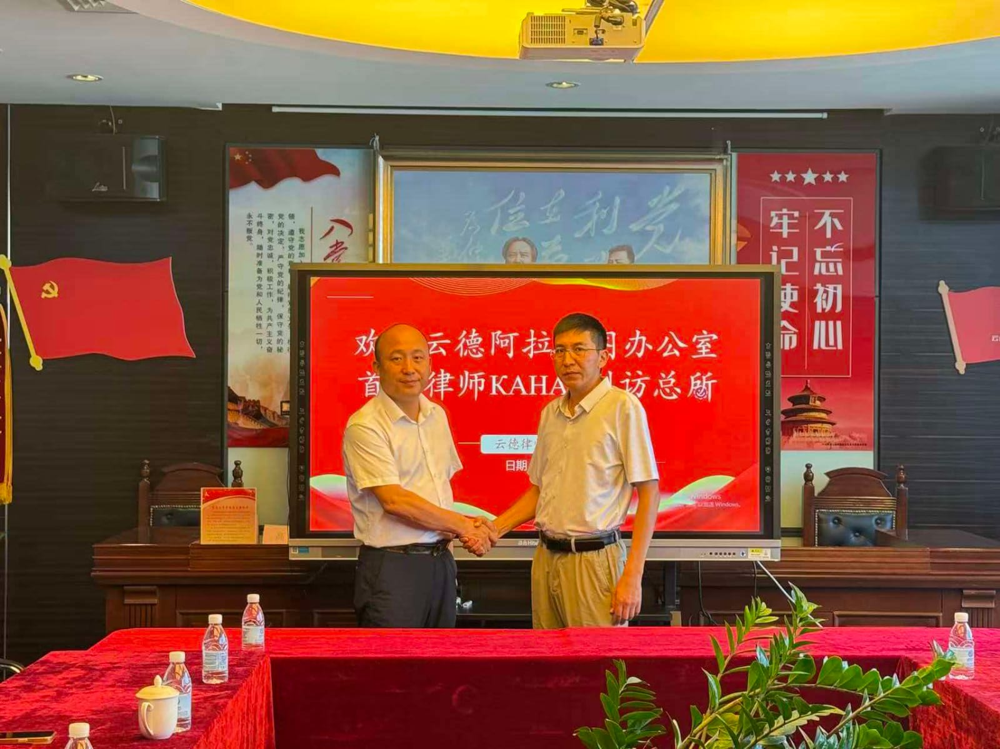
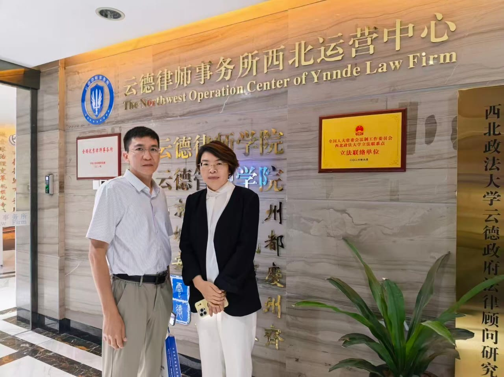
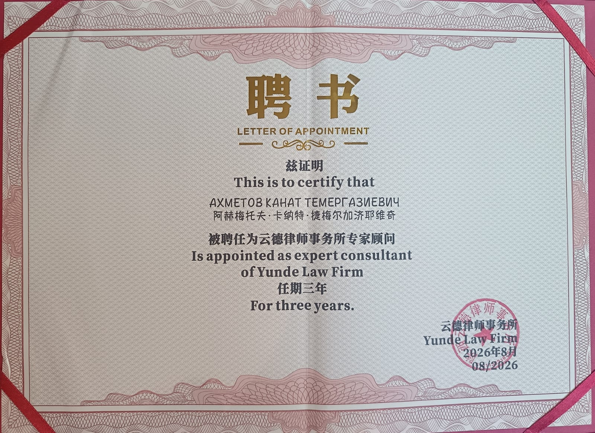

Партнёрское сотрудничество с Yunde Law Firm (КНР)
Адвокат Республики Казахстан Ахметов Канат Темергазыевич развивает профессиональное юридическое сотрудничество с Yunde Law Firm в Китайской Народной Республике.
Сотрудничество направлено на правовое сопровождение инвестиционных, коммерческих, строительных и производственных проектов между Казахстаном и Китаем, а также на защиту интересов предпринимателей и инвесторов при осуществлении трансграничной деятельности.
Юридический мост Казахстан — Китай
Yunde Law Firm (云德律师事务所) — китайская юридическая фирма, с представителями которой в городе Сиань состоялись рабочие встречи по вопросам профессионального сотрудничества.
По итогам взаимодействия Ахметов Канат Темергазыевич получил статус эксперта-консультанта Yunde Law Firm.
Такой формат взаимодействия позволяет объединять знание законодательства Республики Казахстан с профессиональной юридической инфраструктурой китайской стороны.
Международное сотрудничество в сфере права и бизнеса
Развитие проектов между Казахстаном и Китаем требует понимания не только законодательства каждой страны, но и особенностей деловой практики, договорных отношений, инвестиционных механизмов и взаимодействия с государственными органами.
В рамках профессионального сотрудничества с Yunde Law Firm формируется юридическая платформа для сопровождения предпринимателей, инвесторов и компаний, работающих между двумя государствами.
Ахметов Канат Темергазыевич выступает со стороны Казахстана как адвокат, юридический консультант по вопросам казахстанского права и специалист по сопровождению инвестиционных и коммерческих проектов.
Основные направления взаимодействия
- юридическое сопровождение китайских инвесторов в Казахстане;
- структурирование совместных предприятий;
- проверка и подготовка договоров;
- правовой анализ инвестиционных проектов;
- строительство и производственные проекты;
- работа в специальных экономических зонах;
- разрешительные и регистрационные процедуры;
- защита интересов бизнеса и разрешение споров.
Юридическое сопровождение проектов Казахстан — Китай
Практическая задача международного сотрудничества — обеспечить предпринимателю или инвестору понятный правовой маршрут от первоначальной проверки проекта и договора до регистрации бизнеса, реализации проекта и защиты интересов в случае возникновения спора.
Инвестиционные проекты
Правовой анализ структуры проекта, участников, финансирования, земельных вопросов, корпоративной модели, разрешений и основных юридических рисков перед вложением денежных средств.
Регистрация бизнеса в Казахстане
Сопровождение регистрации компаний с иностранным участием, корпоративных процедур, договоров между партнёрами и юридической структуры деятельности китайского инвестора в Казахстане.
Договоры Казахстан — Китай
Подготовка и юридическая проверка коммерческих договоров, соглашений о сотрудничестве, поставке оборудования, строительстве, инвестициях, совместной деятельности и иных трансграничных сделок.
Строительство и производство
Юридическое сопровождение проектов по строительству производственных объектов, размещению оборудования, локализации производства, получению необходимых согласований и взаимодействию с контрагентами.
Специальные экономические зоны
Правовое сопровождение проектов, рассматривающих размещение производства и инвестиционную деятельность на территориях специальных экономических зон Республики Казахстан.
Споры и защита интересов
Анализ конфликтной ситуации, претензионная работа, переговоры, судебное представительство и формирование правовой стратегии при нарушении договорных обязательств.
Рабочие встречи в Сиане
В рамках визита в город Сиань состоялись рабочие встречи с представителями китайской юридической стороны. Обсуждались вопросы сотрудничества и правового сопровождения проектов, связанных с Казахстаном и Китаем.



Эксперт-консультант Yunde Law Firm
В рамках профессионального взаимодействия Ахметов Канат Темергазыевич назначен экспертом-консультантом Yunde Law Firm.
Этот статус дополняет партнёрское сотрудничество и создаёт основу для взаимодействия по юридическим вопросам, связанным с Казахстаном, инвестиционными проектами, коммерческими отношениями и защитой интересов бизнеса.
При этом юридическая помощь по каждому конкретному проекту оказывается с учётом применимого законодательства, характера поручения и индивидуальных обстоятельств дела.
Для кого предназначено сотрудничество
Китайским компаниям и инвесторам
Юридическая помощь при выходе на рынок Казахстана, создании компаний, приобретении активов, строительстве предприятий, локализации производства, заключении договоров и реализации инвестиционных проектов.
- проверка казахстанских контрагентов;
- анализ документов и активов;
- договорное сопровождение;
- корпоративные вопросы;
- земельные и строительные вопросы;
- представительство и защита интересов.
Казахстанскому бизнесу
Правовое сопровождение предпринимателей и компаний Казахстана, которые ведут переговоры с китайскими партнёрами, закупают оборудование, привлекают инвестиции или планируют совместные проекты.
- проверка условий сделки;
- анализ договорных рисков;
- структурирование отношений с инвестором;
- сопровождение переговоров;
- защита при нарушении обязательств;
- координация юридических вопросов с китайской стороной.
Почему это важно для клиента
В международной сделке недостаточно перевести договор с китайского языка на русский или наоборот. Необходимо понимать, кто является контрагентом, какие обязательства реально исполнимы, какое право применяется, где будут разрешаться споры и какие риски возникают при движении денег, оборудования и активов между государствами.
Принцип работы с международным проектом
Каждый проект начинается с изучения документов и определения участников сделки. После этого анализируется юридическая структура, полномочия сторон, предмет договора, финансовые обязательства, обеспечение исполнения, применимое право и возможные способы защиты.
По результатам анализа формируется правовая позиция и последовательность действий. При необходимости проводится взаимодействие с китайской юридической стороной по вопросам, относящимся к территории и правовой системе КНР.
Такой подход позволяет заранее выявлять юридические риски и не ограничиваться устранением последствий уже возникшего конфликта.
Юридический проект между Казахстаном и Китаем?
Если вы представляете китайскую компанию, планируете инвестиционный проект в Казахстане либо являетесь казахстанским предпринимателем, работающим с партнёрами из КНР, документы и структуру проекта можно предварительно проанализировать до принятия ключевых решений.